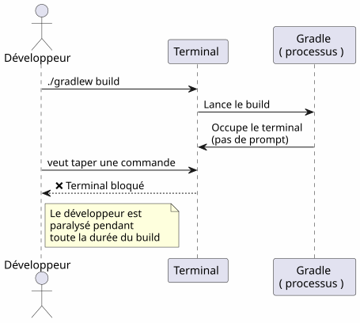
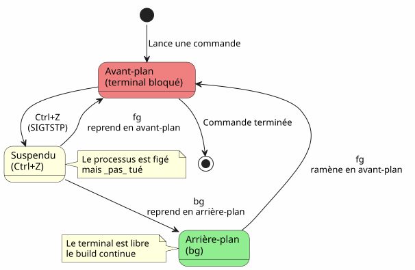
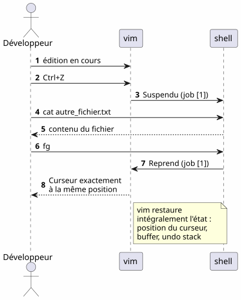
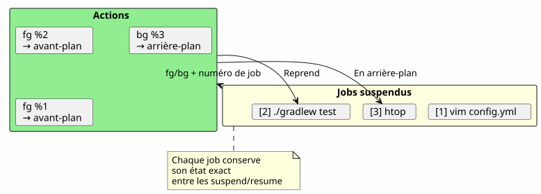
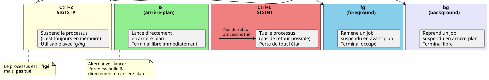
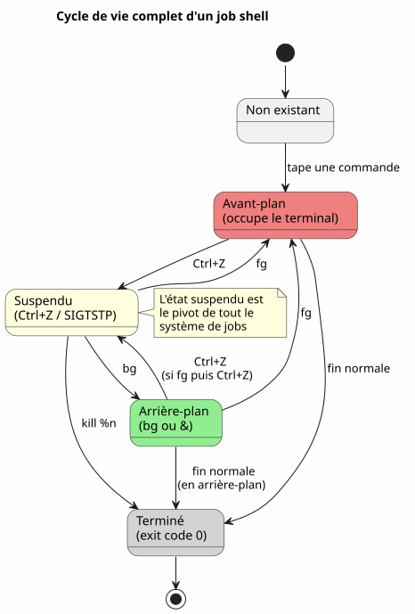
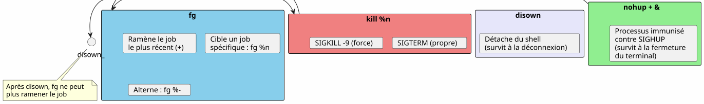
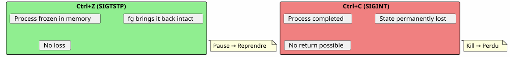
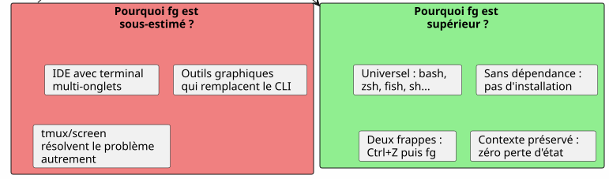
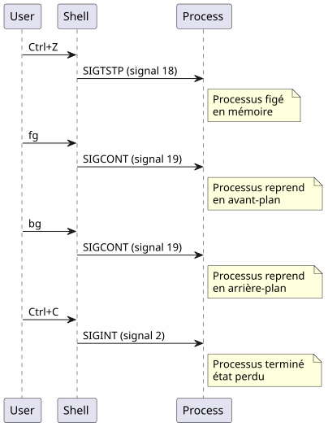

The super tip for the fg command: when Ctrl+Z saves your terminal session
Published on 18 April 2026
- The problem: a busy terminal
- The three essential commands
- Scenario 1: The long build
- Scenario 2: The forgotten editor
- Scenario 3: The suspended opencode process
- Scenario 4: Managing multiple jobs simultaneously
- Differences between fg, bg, Ctrl+Z, Ctrl+C and &
- The complete life cycle of a job
- Advanced Tips
- Pitfalls and common errors
- Summary diagram
- Why fg is underestimated
- Technical memory: signals
- Conclusion
- References
You launch`./gradlew build`, the terminal is blocked for 3 minutes, and you need to do something else meanwhile? No need to open a new tab.`Ctrl+Z`suspends the process,`fg`brings it back exactly where you left it. It’s the most underestimated Unix tip in a developer’s daily life.
- toc
-
[]
The problem: a busy terminal
Every developer has experienced this situation:
$ ./gradlew build
> Building...The terminal is blocked. You can no longer type any command. And you need to consult a file, launch a`git status`, or check a busy port.

Most developers open a new terminal. But there is a more elegant, faster, and native solution: job management.
The three essential commands
Ctrl+Z — Suspend (SIGTSTP)
`Ctrl+Z`sends the signal`SIGTSTP`to the foreground process. The process issuspended— not killed — and the terminal gets its prompt back.
$ ./gradlew build
> Building...
^Z
[1]+ Stoppé ./gradlew build
$The number in brackets`[1]`is thejob number. Le `+`indicates the default job.
fg — Resume in foreground
`fg`brings the suspended job back to the foreground. The process resumes exactly where it stopped.
$ fg
./gradlew build
> Building... (reprend où il en était)With a specific job number:
$ fg %2bg — Resume in background
`bg`resumes the process without blocking the terminal. Ideal for long builds.
$ bg
[1]+ ./gradlew build &
$Le `&`at the end means that the process is running in the background.
jobs — List shell jobs
$ jobs
[1]- Stoppé vim README.md
[2]+ En cours ./gradlew build
Scenario 1: The long build
This is the most common use case. You launch a Gradle build, the terminal is blocked, and you need to do something else.

Step by step
$ ./gradlew build
> Building...
^Z
[1]+ Stoppé ./gradlew build
$ git status
On branch main
nothing to commit, working tree clean
$ fg
./gradlew build
> Building...
BUILD SUCCESSFUL in 2m 34sScenario 2: The forgotten editor
You are in`vim`, you need to consult another file without leaving`vim`.
# Dans vim, en mode commande :
:shell
$ cat /path/to/other/file.txt
$ exit
# Retour dans vimBut that’s tedious. With`Ctrl+Z`, it’s immediate:
# Dans vim, n'importe quel moment :
Ctrl+Z
[1]+ Stoppé vim README.md
$ cat /path/to/other/file.txt
# ... lire le fichier ...
$ fg
vim README.md
# Retour exact là où on en était, curseur en place
NOTE:`vim`perfectly restores its state after a`fg`: cursor position, buffer content, undo history — everything is preserved.
Scenario 3: The suspended opencode process
This is the scenario that motivated this article. You are using`opencode`(CLI tool to drive an LLM on your code), and the process is suspended.

$ opencode
# ... session en cours, LLM analyse le code ...
^Z
[1]+ Stoppé opencode
$ git diff HEAD~1
# vérifier les changements récents
$ fg
opencode
# Le LLM reprend là où il s'était arrêtéThe advantage is twofold:
-
No loss of context: the LLM session, conversation history, open files — everything is preserved
-
No restarting: no need to relaunch opencode, reload the context, or re-explain the problem to the LLM
Scenario 4: Managing multiple jobs simultaneously
fg et `bg`accept a job number to target a specific process when several are suspended.
$ vim config.yml
^Z
[1]+ Stoppé vim config.yml
$ ./gradlew test
^Z
[2]+ Stoppé ./gradlew test
$ htop
^Z
[3]+ Stoppé htop
$ jobs
[1] Stoppé vim config.yml
[2]- Stoppé ./gradlew test
[3]+ Stoppé htop
$ fg %2
./gradlew test
# Le build reprend en avant-plan
$ bg %3
[3] htop &
# htop reprend en arrière-plan
Job commands summary
| Command | Effect | Example |
|---|---|---|
|
Suspends the foreground process |
Sending`SIGTSTP` |
|
Resumes the default job in foreground |
|
|
Resumes job n in foreground |
|
|
Resumes the default job in background |
|
|
Resumes job n in background |
|
|
Lists the current shell jobs |
|
|
Terminates job n |
|
Differences between fg, bg, Ctrl+Z, Ctrl+C and &
Many developers confuse these mechanisms. Here is a decisive clarification.

| Shortcut/Command | Signal | Effect | Come back? |
|---|---|---|---|
|
|
Suspends the process (frozen, in memory) |
Yes:`fg` ou |
|
|
Kills the process (terminated) |
No: process destroyed |
|
|
Kills the process + core dump |
No: process destroyed |
|
— |
Launches in background directly |
`fg`to bring it to foreground |
Ctrl+Z`isnon-destructive. The process is frozen as is, in memory. You can resume immediately with`fg. It’s a pause, not a stop.
|
The complete life cycle of a job

Advanced Tips
fg with the most recent job and alternating
fg`without argument brings back the job marked+(the most recent). But you can also use%-`to target the previous job:
$ vim file1.txt
^Z
[1]+ Stoppé vim file1.txt
$ vim file2.txt
^Z
[2]+ Stoppé vim file2.txt
$ fg # ramène job [2] (le plus récent)
$ fg %- # ramène job [1] (le précédent)kill a job cleanly
$ jobs
[1]- Stoppé vim config.yml
[2]+ Stoppé ./gradlew test
$ kill %2 # envoie SIGTERM au job 2
$ kill -9 %1 # envoie SIGKILL au job 1 (force)disown: detach from shell
disown`removes a job from the shell’s job table. The process continues to run but can no longer be brought back with`fg:
$ ./gradlew build &
[1] 12345
$ disown %1
# Le processus continue mais n'est plus lié au shell
# Ça survives à la fermeture du terminalCombine with nohup for long processes
For a process to survive the closing of the terminal:
$ nohup ./gradlew build &
[1] 12345
$ disown %1
# Le build continue même si vous fermez le terminal
Pitfalls and common errors
Confusing Ctrl+Z and Ctrl+C
This is the most frequent error.`Ctrl+C`kills the process.`Ctrl+Z`suspends it. If you press`Ctrl+C`by reflex, all state is lost — open files, LLM sessions, builds in progress.

Jobs are local to the shell
jobs, fg et `bg`only work in the shell that launched the processes. If you open a new terminal, you will not see the jobs from the other.
# Terminal 1
$ vim file.txt
^Z
[1]+ Stoppé vim file.txt
# Terminal 2 (nouveau)
$ jobs
# (rien — les jobs sont locaux au shell)To see system-wide processes, use`ps` ou htop:
ps aux | grep vimJobs do not survive shell closure
If you close the terminal, all suspended or background jobs are destroyed. For a process to survive, use`nohup`+disown:
$ nohup ./gradlew build &
[1] 12345
$ disown %1
# Fermer le terminal → le build continueInteractive processes and fg
Some interactive programs do not behave well after a`Ctrl+Z`+fg. It’s rare but it happens:
-
Some programs that use signals (vim, htop, less handle`Ctrl+Z`well)
-
Long network programs (ssh, opencode) generally recover correctly
-
Programs that modify the terminal (ncurses) can sometimes leave the terminal in an unexpected state
In case of a corrupted terminal after a`fg`, type:
resetSummary diagram

Why fg is underestimated
Most modern developers discover`fg`late, if ever. A few reasons:
-
IDEs hide the terminal: VS Code offers an integrated terminal, but multiple tabs make`fg`seem less necessary
-
Graphical tools replace CLIs: file managers, system monitors, graphical Git clients
-
tmux and screen: these multiplexers solve the same problem differently, but`fg`is simpler and always available
Yet,`fg`is:
-
Universal: present in all POSIX shells (bash, zsh, fish…)
-
Dependency-free: no need to install tmux or screen
-
Instant: two keystrokes (
Ctrl+Z`then`fg) to suspend and resume -
Context preserving: the process state remains intact

Technical memory: signals
For the curious, here are the signals involved:
| Signal | Name | Sent by | Effect |
|---|---|---|---|
2 |
|
|
Interruption — terminates the process |
3 |
|
|
Quit with core dump |
18 |
|
|
Interactive stop — suspends the process |
19 |
|
|
Continue — resumes a suspended process |
15 |
|
|
Clean termination |
9 |
|
|
Forced termination (impossible to intercept) |
The complete flow:

Conclusion
`fg`is not an obscure tip — it’s a fundamental mechanism of the Unix shell, available since the 70s. The fact that most developers ignore it is a symptom of our era: IDEs and multiplexers have distanced us from the basics.
But when you are on an SSH server, in a minimal terminal, or simply using`opencode`and the LLM is in the middle of working —Ctrl+Z, fg, bg, `jobs`are your best friends.
_ Ctrl+Z suspends, fg resumes. It’s the pause-play of the terminal. _
References
-
man bash— JOB CONTROL section -
man signal— list of POSIX signals